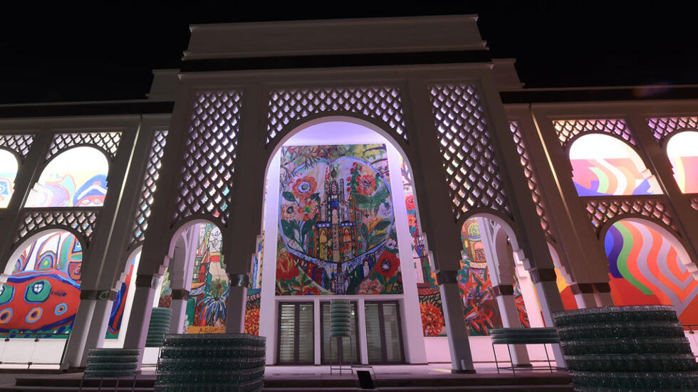
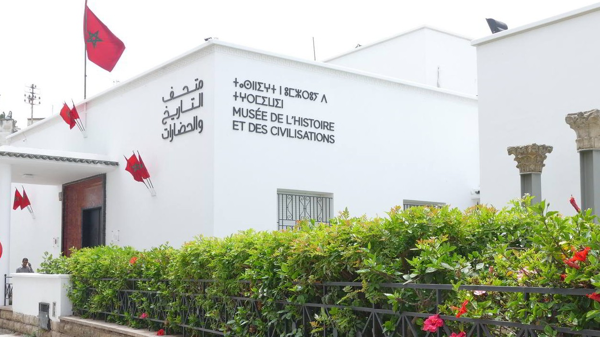
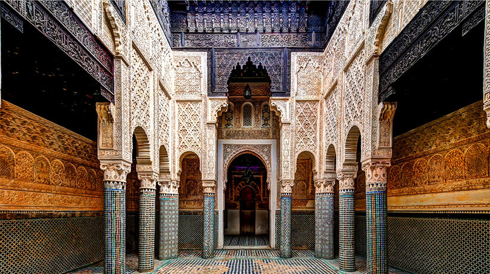
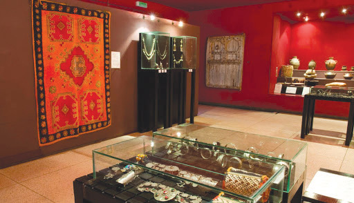
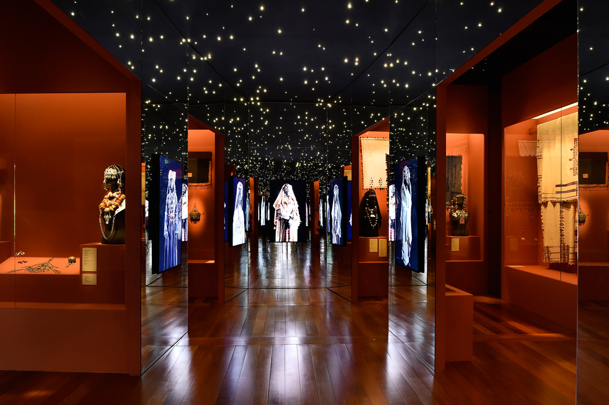
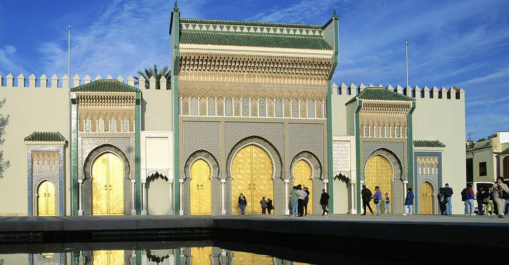
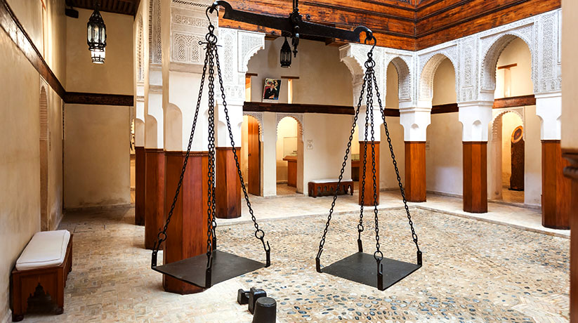
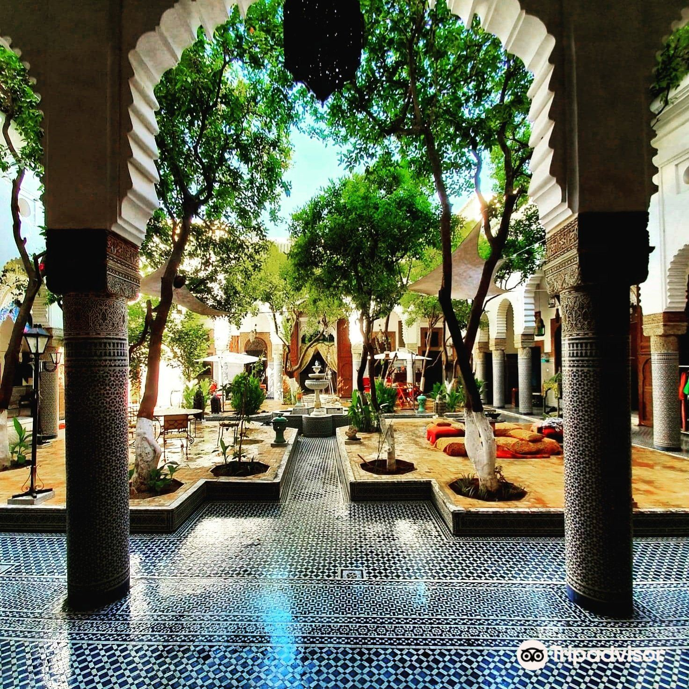

Le Maroc, pays à la culture foisonnant
En parcourant le Maroc, vous découvrez une terre d'arts et d'histoire. Partout, les influences se mêlent pour composer un patrimoine riche et varié que musées et galeries d'art préservent, valorisent et mettent à votre portée. Plusieurs villes marocaines regorgent de trésors ! De quoi faire le plein de culture
Rabat, une métropole entre traditions et modernité

01.le musée mohammed 6 RABAT

02.musée des histoires des civilisation

03.musée de la medersa merinide de sale
Marrakech, ville impériale aux cultures variées

04.Musée Yves Saint Laurent

05.musée berbère

06.Musée Yves Saint Laurent
Fès, capitale de l’art et de l’artisanat traditionnel

07.MUSEE DE BATHA

08.LENSEMBLE NEJJARINE
